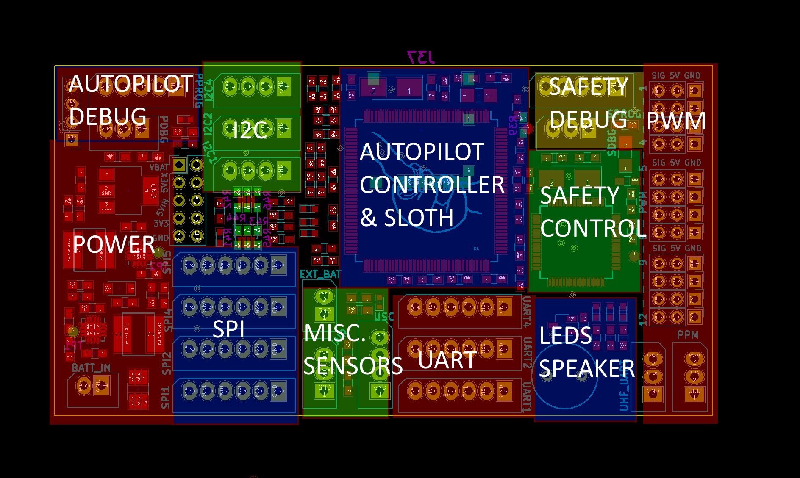

ZeroPilot Hardware
Introduction
The Zeropilot is WARG's autopilot platform using a custom PCB and firmware. The ZeroPilot has 2 processors on board. The first one, an STM32F7 chip, is the main autopilot processing unit. It controls both low level and high level control, including PID loops, navigation control, and sensor communication. The secondary chip is a STM32F0 chip called the safety controller, which translates the receiver's PPM to PWM, and then transmits it to the main autopilot unit using I2C or SPI. It also controls the autopilot's failsafe mode, and passes the PPM straight to the PWM output so that the pilot has full control of the UAV in case of firmware bugs.
The ZeroPilot schematic and PCB are created using KiCad and can be found on WARG's Github.
PCB Overview
Below is an overview of the sections of the PCB:

Stackup
The ZeroPilot is a 4 layer board. This makes routing the PCB much easier and allows the PCB to be smaller. Each layer has a designated purpose and they are connected through small plated through holes known as vias.
Layer 1 (Top layer)
This layer has all the components on it including the 2 processors, power circuitry, and molex-SPOX connectors. Routing on here is minimal and is limited to critical routing for components listed below.
- Decoupling capacitors are routed on the top layer since they need to directly be connected to VCC and GND as close as possible. These capacitors smooth out the voltage into the processor and ensure there is no stray AC noise in the 3.3V power supply. There is 1 decoupling capacitor for each VCC pin.
- Crystals are routed on the top layer because the traces must remain short in order to produce a consisent and predictable frequency. Longer traces cause stray capacitance which can affect the frequency of the oscilation. It is also important that the crystals have a good ground pour surrounding them to prevent excess RF energy to be released and affect other components.
- Switching power supplies are routed on the top layer since there is a lot of AC current caused by the 2 buck regulators. Switching regulators quickly turn on and off a switch to let current flow through the inductor, causing a consistent voltage. The feedback pin of the buck regulator allows it monitor the output voltage and change the amount of time the switch is on (its duty cycle) so that the output voltage is constant. This high frequency switching can cause a lot of RF noise, so keeping this routing on one layer helps reduce any stray RF energy.
Layer 2
This layer is where most of the routing is done. There are a few important things to note when routing on this layer:
- Do not route underneath any of the 4 crystals. Layer 2 is not shielded from the RF energy of the crystals, so it can induce noise in the signal lines and corrupt communication busses.
- Make sure there are no large gaps with no copper. When the 4 layers are laminated together in the PCB fabrication process, large gaps of copper can cause the layers above to sag and deform.
- For debugging purposes, it is helpful not to run the complete trace on layer 2. If part of the trace is routed on layer 1 or 4, those traces can be cut if there is an issue with it. If the trace is completely on layer 2 then there is no way to break the trace. However, this isn't a high priority
Layer 3
This layer is the ground plane. It makes sure all the circuitry has the same ground. Any ground pin of ICs should have a via to connect the chip to this layer and should be near the ground pin of the chip. There are a couple things to note about routing on this layer:
- There should be no routing done on this layer.
- Never route on this layer
- Make sure there isn't a single trace on this layer or else you will be shamed and exiled from WARG (not actually).
Layer 4 (Bottom layer)
This layer is used for power planes and some various components. Reserving a layer for power makes routing significantly easier and minimizes resistances in the power traces.
- Make sure there are no thin spots in the power planes. Bottlenecks cause high resistance and can cause voltages to be different in different parts of the power planes
- Some components can be placed here, but they must have low Z-height so that it is easy to mount on a surface.
- Minimize components on this layer. Due to the SMD reflow process, all components on this side must be done by hand. Only put selective components on this layer when they might not always be used or are easy to solder by hand.
Power
The ZeroPilot has 3 voltage regulators to power all the ICs and peripherals.
5V External
The 5V external power supply powers PWM and PPM. This is because these connections have a high risk of being shorted. PWMs are not shrouded or keyed connections, so they can be connected backwards or shifted. Separating 5V external and 5V interal power supplies allows increased safety and redundancy to prevent brown-outs on the processors.
The 5V supply is power by a DC/DC buck regulator and is the same regulator as the 5V interal. It is important that the inductor, boost regulator, and input capacitor are well routed and have thick traces or copper pours.
the PW_GOOD pin allows the processor to know if the power supply has failed in some way. Usually this is because of a short on the output rail.
5V Internal
The 5V internal power supply powers the communication headers (I2C, SPI, UART), the speaker, and the 3.3V supply. It is more safe than the 5V external supply since it is routed to interal circuitry or to shrouded and keyed connectors.
The 5V supply is power by a DC/DC buck regulator and is the same regulator as the 5V external. It is important that the inductor, boost regulator, and input capacitor are well routed and have thick traces or copper pours.
the PW_GOOD pin allows the processor to know if the power supply has failed in some way. Usually this is because of a short on the output rail.
3.3V
The 3.3V power supply is a linear regulator (LDO). It power both processors, microSD card, and flash memory.
Using and LDO enables a smoother output voltage and smaller footprint at the cost of less efficiency. The regulator is powered off of 5V internal supply and converts the 5V down to 3.3V. LDOs are inefficient because input current = output current. This means that is it is supplying 20mA at 3.3V, the input current will be 20mA at 5V.
Schematic Conventions
To make sure the schematic looks clean and consistent, we have standardized convetions for schematic design.
- Keep as much circuitry off of the main page as possible. KiCad works in hierarchical structure, so the main page should essentially be a block diagram to show how the schematic is structured
- Use busses for cleanliness. It is possible to just put net names for everything and the schematic can be connected that way. However, this is very hard to read and follow where everything is going. If the distance is short, just use lines to connect the pins together. If there are multiple similar signals (such as UART), group them into a bus so that it is visually obvious where else it connects to. It is acceptable for power to be connected only via net names.
- Make sure the schematic flows left to right. Because of how we read english, we look at the schematic from left to right. This means that all inputs should be on the left side, and all outputs should be on the right side. For example, the power circuit should always be on the left side of the schematic since it is the input for the system. PWMs are on the right since that is the final output for the system.
- Make sure to use standard WARG or KiCad attribute names. If you need a specific attribute on a part, add its name here for reference.
-part_num: WARG's unique part number that maps to the component library
-no_load: This parameter should be used if a component isn't always be soldered onto the board. Use the value NO LOAD to indicate this.
- When you fabricate a board, make a Github release and attached the gerber files to it. This makes it easy to track what is being fabricated. Do the same for the WARG-KiCad library when you order the components for the board, and attach the bill of materials to the release.
- Use common sense. Make the schematic look clean and understandable, even if it means taking a couple hours after a schematic change to make it look nice. Having an easy to understand schematic will make debugging the PCB and schematic issues a much more pleasant experience.